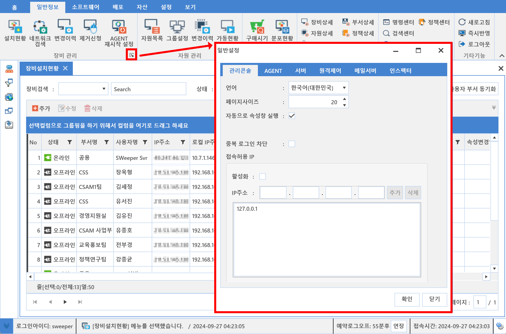

2-1. 환경설정
2-1. 환경설정
Source: https://www.sweeper.or.kr/etc/manual/21.html
2-1. 환경설정
2. 홈 ››


라이선스 및 서버, 에이전트, 기능 동작에 대한 환경설정을 할 수 있는 메뉴입니다. 라이선스를 제외한 일반, 소프트웨어, 배포 환경설정은 각 기능메뉴의 런처 다이얼로그를 통해 설정가능합니다.
환경설정

런처다이얼로그
아래 그림에 표시된 런처다이얼로그를 선택하면 해당 환경설정 화면이 팝업됩니다.

참고사항
SWeeper 제품을 설치후 라이선스 만료일이 다가오면, 관리콘솔 로그인시 메세지 창으로 알려줍니다.
(라이선스 만료 3개월 전 1회, 2개월전 1회, 1개월 전 무한)
© Copyright SWeeper Inc.. All Rights Reserved